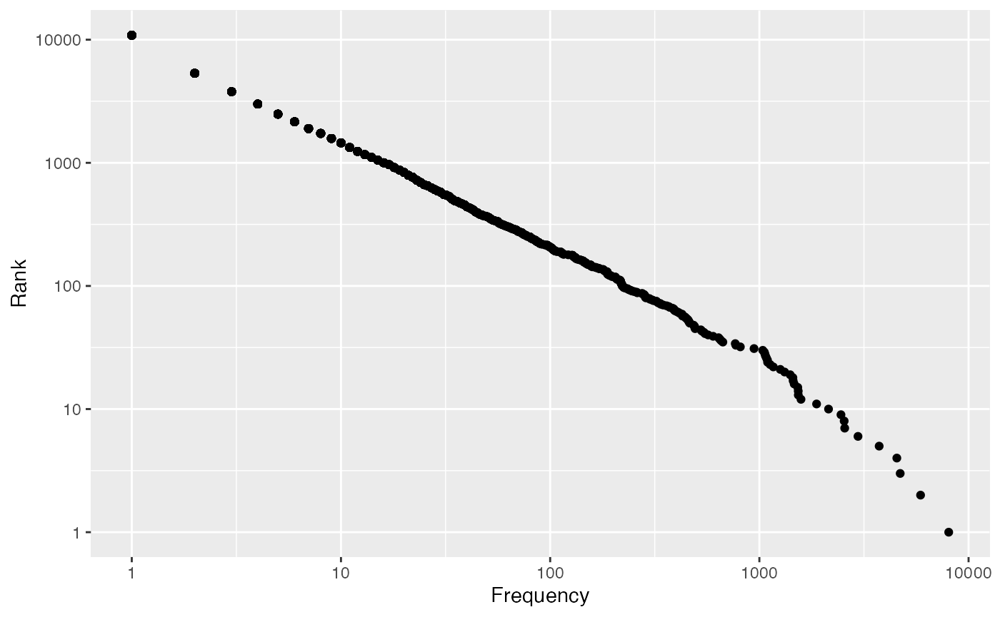
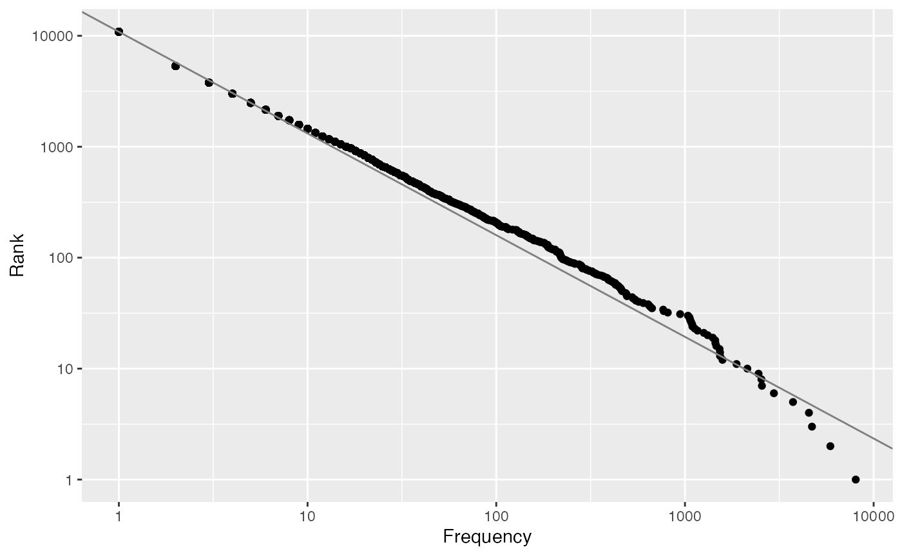

dracula.RmdThe zipfs package includes `dracula, a character string of lines from the book Dracula, obtained from Gutenberg:
?dracula
dracula[1:20]
#> [1] "The Project Gutenberg EBook of Dracula, by Bram Stoker"
#> [2] ""
#> [3] "This eBook is for the use of anyone anywhere at no cost and with"
#> [4] "almost no restrictions whatsoever. You may copy it, give it away or"
#> [5] "re-use it under the terms of the Project Gutenberg License included"
#> [6] "with this eBook or online at www.gutenberg.org/license"
#> [7] ""
#> [8] ""
#> [9] "Title: Dracula"
#> [10] ""
#> [11] "Author: Bram Stoker"
#> [12] ""
#> [13] "Release Date: August 16, 2013 [EBook #345]"
#> [14] ""
#> [15] "Language: English"
#> [16] ""
#> [17] ""
#> [18] "*** START OF THIS PROJECT GUTENBERG EBOOK DRACULA ***"
#> [19] ""
#> [20] ""Use book_meta() to extract useful book meta data from a Gutenberg book. You need to provide the lines from header:
book_meta(dracula[1:20])
#> # A tibble: 1 x 3
#> author title release
#> <chr> <chr> <chr>
#> 1 Bram Stoker Dracula August 16, 2013 [EBook #345]count_words() counts occurrences of every word in a character string
word_frequency <- count_words(dracula)
word_frequency
#> # A tibble: 10,864 x 2
#> word n
#> <chr> <dbl>
#> 1 the 8037
#> 2 and 5896
#> 3 i 4712
#> 4 to 4540
#> 5 of 3738
#> 6 a 2961
#> 7 in 2558
#> 8 he 2543
#> 9 that 2455
#> 10 it 2141
#> # … with 10,854 more rowsA rank frequency plot can be created by passing in the counts to plot_rank():
word_frequency$n %>%
plot_rank()
A line based on the maximum likelihood estimate for \(\alpha\) can be added to the plot by adding the argument add_fit = TRUE:
word_frequency$n %>%
plot_rank(add_fit = TRUE)
Or, if only the estimate is desired, it can be computed with fit_zipfs(), again passing in only the counts:
word_frequency$n %>%
fit_zipfs()
#> [1] 1.091099